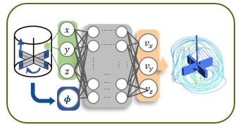

Physics-informed learning
Embed physical structure and conservation relationships into learning-based models of reactor behavior.
Accelerating high-dimensional, physics-based reactor models through physics-informed neural networks, geometry-aware surrogate modeling, and computational optimization.

Approach / 01
Physics-informed learning offers new ways to overcome the computational cost of coupled transport and reaction models. My work develops PINN-based approaches and surrogate models for fluid-flow prediction, transfer across geometries, and simultaneous reactor design and operating-condition optimization.
Explore overall research framework ↗Research workflow
Embed physical structure and conservation relationships into learning-based models of reactor behavior.
Explore how learned models transfer across flow configurations, operating conditions, and reactor geometries.
Connect fast predictive surrogates with computational workflows for reactor design and process optimization.
Featured visualization
Your PINN–CFD animation belongs here. Place your GIF in assets/pinn-cfd.gif and it will appear automatically, replacing the temporary figure.

Applications
Physics-informed models for flow prediction and geometry-dependent reactor optimization, with room to showcase the existing PINN–CFD animation.
Develop computationally efficient substitutes for repeated, expensive reactor-model evaluations.
Related publications